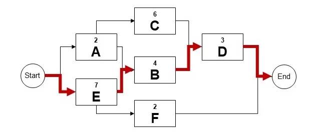
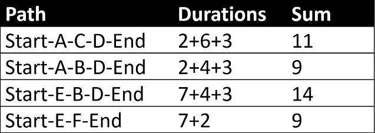
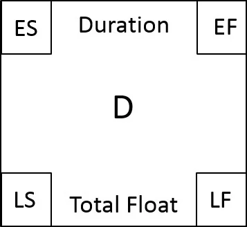
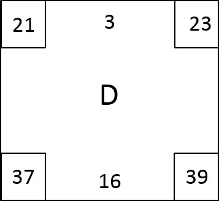
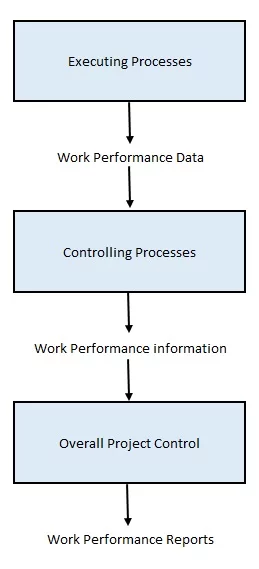
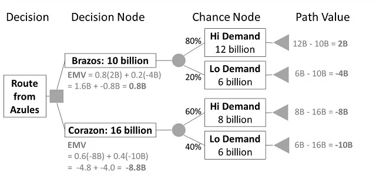

The summary is on the right and the details are below.
How will you know if you are ready to take "the real" PMP Exam? As a rule of thumb, we tell our students, that if you are consistently scoring 80% or more when you take an exam for the first time, then that is a good sign of readiness. However, take this with a grain of salt because we are all individuals and your personal readiness may differ.
Please sign up for The PM Exam Simulator. It is a full-featured online testing environment for the PMP Exam with 1,200 questions where your results are stored permanently and also emailed to you.
Additionally, the simulator also provides a much richer explanation. In your results below, we include a general explanation for the question and answers. But in The PMP Exam Simulator, you would also receive an explanation why each of the answer choices is correct or incorrect, as well as a reference that allows you to read up on the subject and learn from any mistakes.
The project cost baseline graph displays a time-phased view of the cost baseline along with funding requirements and expenditures. The stair-stepped line on the graph represents the funding requirements, which includes the cost baseline and the management reserve. The project budget is represented by the last point of the stair-step line. The question states that EAC (estimate at completion) is less than the project budget (the top stair step). Therefore, in this scenario, total funding for the project exceeds the project's anticipated needs.
Since your company has been awarded the contract, you would need the project's procurement SOW agreed upon in the Conduct Procurements process for selecting a seller or in the contract, if there is a signed agreement in place. Among the four answer choices, the best option is to ask the customer for the SOW. Asking the customer (i.e., the buyer) for the SOW ensures you have the version that was approved from the customer's perspective. In addition, collaborating with the initiating company allows you to have a better understanding of the project purpose, objectives, and expected benefits that will help in crafting the project charter.
The Identify Stakeholders process is the process of identifying all people or organizations impacted by the project and documenting relevant information regarding their interests, involvement, and impact on project success. Both the Develop Project Charter process and the Identify Stakeholders process are part of the Initiating Process Group which should be completed before proceeding to the processes in the Planning Process Group. In this scenario, since the project charter has been developed and approved, the Identify Stakeholders process should be performed next.
A power/interest grid is a classification model used for stakeholder analysis and management that groups the stakeholders based on their level of authority (power) and their level of concern (interest) regarding project outcomes. The classification and recommended management strategies are as follows:
- Low-power/low-interest: monitor only
- Low-power/high-interest: keep informed
- High-power/low-interest: keep satisfied
- High-power/high-interest: manage closely
Based on this scenario, the sponsor can be classified as high-power and low-interest; therefore, the correct answer is to keep the sponsor satisfied.
In this scenario, the project sponsor requested a document that provides specific information about the product requirements of your current project. The requirements traceability matrix is a grid that links product requirements from their origin to the deliverables that satisfy them. Typical attributes used in the requirements traceability matrix may include a unique identifier, a textual description of the requirement, the rationale for inclusion, owner, source, priority, version, current status, and status date. Additional attributes to ensure that the requirement has met stakeholders' satisfaction may include stability, complexity, and acceptance criteria.
Delaying the decomposition of the system testing work package until later in the project is an example of rolling wave planning. Rolling wave planning is an iterative planning technique in which the work to be accomplished in the near term is planned in detail, while the work in the future is planned at a higher level. Decomposition may not be possible for a deliverable or subcomponent that will be accomplished far into the future. The project management team usually waits until the deliverable or subcomponent is agreed on, so the details of the work breakdown structure (WBS) can be developed. Therefore, the best approach is to use rolling wave planning and decompose the system development work package now and then decompose the system testing work package later, when more project information becomes available.
The question states that project planning is about to begin which suggests that project initiation has been completed. The project charter is created during the Develop Project Charter process as part of project initiation. The project team uses the project charter as a starting point for initial project planning. The type and amount of information in the project charter varies depending on the complexity of the project and the information known at the time of its creation. At a minimum, the project charter should define the high-level information about the project that will be elaborated in the various components of the project management plan.
The question suggests that the project manager is performing the Collect Requirements process, which is the process of determining, documenting, and managing stakeholder needs and requirements to meet project objectives. A context diagram is one of the tools and techniques that might be used during the Collect Requirements process. A context diagram is a visual depiction of the product scope showing a business system (process, equipment, computer system, etc.), and how people and other systems (actors) interact with it. Of the available choices, developing the context diagram is the best way to implement the stakeholder’s suggestion.
The Peter Principle states "In a hierarchy, every employee tends to rise to his/her level of incompetence." Most project team members are motivated by an opportunity to grow, accomplish, and apply their professional skills to meet new challenges. Their achievements continuously promote them within an organization to a certain level until they are unable to perform. Sam might have risen to his incompetency level. While the topic of this question is not included in the PMBOK® Guide, the Project Management Professional (PMP)® Examination Content Outline, June 2015, covers cross-cutting knowledge and skills with which PMP aspirants are expected to be familiar.
Note, the PMBOK® Guide is provided as a reference to indicate that the Acquire Resources process described in the scenario.
Monitor Communications is the process of monitoring and controlling communications throughout the entire project life cycle to ensure the information needs of the project and its stakeholders are met. In this scenario, the stakeholders are reaching out directly to your project engineers, which is not the most effective use of their time. To determine why this is happening, you need to review the communications management plan to determine how stakeholder inquiries are to be managed. With this information, you can best judge whether the stakeholders are violating that agreement and proceed to make whatever changes are needed to shield the project engineers from the time-consuming requests for information and develop a better communications protocol for stakeholder information requests.
All of the available answers seem like possible options in this scenario, but the question is specifically asking what you should do 'first'. Although you have already analyzed the situation and you know what corrective actions are required, you must follow the proper change control procedure. A configuration element is a project artifact that has been placed under configuration control. Any change to a configuration element should be formally controlled and will require a change request. Since the question describes a situation requiring a change to a configuration element, the first thing you should do is submit a change request and have it approved before you can implement the changes.
Monitor and Control Project Work is the process of tracking, reviewing, and reporting overall progress to meet the performance objectives defined in the project management plan. Of the available choices, only comparing actual project performance against the project management plan is performed during the Monitor and Control Project Work process.
The change control board (CCB) is a formally chartered group responsible for reviewing, evaluating, approving, deferring, or rejecting change requests. The CCB can include project stakeholders, and a change may be requested by any stakeholder involved with the project. Therefore, it is possible for a member of the CCB to create and submit a change request.
The to-complete performance index (TCPI) is a measure of the cost performance that is required to be achieved with the remaining resources in order to meet a specified management goal, expressed as the ratio of the cost to finish the outstanding work to the remaining budget. A TCPI value equal to 1.0 means you are right on budget, and as long as you maintain the present cost performance index (CPI), you should not exceed the project budget. A TCPI value greater than 1.0 means you need to take a stricter cost management approach or you will exceed your budget at completion (BAC). A TCPI value less than 1.0 indicates you are within your budget and have done an excellent job of managing project costs.
Based on the scenario described, the project team is performing the Estimate Activity Durations process. An input to this process is the resource breakdown structure (RBS) which is a hierarchical list of team and physical resources related by category and resource type that is used for planning, managing, and controlling project work. Each descending level represents an increasingly detailed description of the resource until the information is small enough to be used in conjunction with the WBS to allow the work to be planned, monitored, and controlled.
This scenario is an example of statistical sampling since it involves the team selecting 20 out of 50 engineering drawings at random to measure accuracy and completeness. Statistical sampling is among the data gathering techniques that can be used as part of the Control Quality process. Statistical sampling is often applied when inspecting the entire population would be too costly or time-consuming. In this instance, given that the project is on a tight schedule and budget, statistical sampling makes sense to use to inspect the engineering drawings.
Inspections carried out as part of the Control Quality process may uncover defects or areas of noncompliance with project requirements, which, in turn, may generate change requests. It is the responsibility of the project team to ensure that those approved change requests are implemented and properly tested, completed, and certified. In this scenario, the project manager learns that an approved change request was never implemented. Retrospectives, root cause analysis, and quality reports would not have prevented this issue but could be used to help the team avoid such a mistake in the future. An approved change request review would have provided the project manager and the team a mechanism for verifying that the approved change request was implemented and is, therefore, the best answer to the question asked.
According to the scenario, you are looking for information about the quality management issues that have been escalated by the team and any corrective actions that have been recommended and/or implemented. This is the description of a quality report. Quality reports are an output of the Manage Quality process and include information that can be used by other processes and departments to take corrective actions in order to achieve the project quality objectives.
Looking at the issue log is a plausible answer choice. Questions like this, where there are two plausible correct answers, are tough but they might appear on the exam. Issue logs record and track 'all' issues that arise in the course of managing a project, whereas the information presented in quality reports is specific to quality management including the quality management issues escalated by the team which is exactly what the question asks. Although an issue log could have been used to record those issues, it would also contain non-quality management related information, which is irrelevant to you in this scenario. Quality reports would provide exactly the information you are looking for, and most likely in greater detail, making quality reports the best answer to the question asked.
Design for X (DfX) is a set of technical guidelines that may be applied during the design of a product for the optimization of a specific aspect of the design. In this scenario, technical guidelines are being applied to design a new modular home that optimizes its manufacturability. DfX provides the most accurate and precise definition of the technique being used in this scenario and is, therefore, of the available choices, is the best answer to the question asked.
The assumption log is a project document used to record all assumptions and constraints throughout the project life cycle. The assumption log is created as an output of the Develop Project Charter process, as such limited information is available to create this project document. High-level strategic and operational assumptions and constraints are normally identified in the business case before the project is initiated and will flow into the project charter. Lower-level activity and task assumptions are generated throughout the project. The assumption log is used to record all assumptions and constraints throughout the project life cycle. Therefore, of the available options, the project business case is the best source of information to use in the development of the assumption log.
To answer this question, first, determine under which knowledge area the described activities fall. With reference to sponsors and stakeholders, you may guess that it is Stakeholder Management. However, the activities of collection, creation, distribution, storage, and monitoring project information fall under Communications Management.
Next, determine what process group is related to these activities. Is it Planning or Monitoring & Controlling? No, the task is not to develop the communication models in Planning, nor is the task to identify if the planned communications artifacts and activities have had the desired effect. Instead, the current activities are mostly collection, creation and distribution and delivery, which take place while executing the work of the project. An important clue is that you are distributing work performance reports, which is an output of the Direct and Manage Project Work process in the Integration knowledge area, in the Executing process group.
Therefore, the correct answer is that these activities fall under Manage Communications.
Using the critical path method may require drawing a project schedule network diagram, or listing all the possible the sequences of paths with the given activities, then adding up the durations, and knowing which path constitutes the critical path.
Given the activity list shown, you can see that:
- Start serves as predecessor for both A and E, creating a divergence into two paths.
- Activity A serves as predecessor for both B and C, creating another divergence.
- Activity E serves as a predecessor for both B and F, creating another divergence.
The project schedule network diagram is as follows.

The resulting list of paths with their aggregated durations is below. The critical path is Start-E-B-D-End, and the duration of the critical path with the data given is 14.

Ideally, to learn about all identified risks on the project, the project sponsor would have to review the risk register. However, the question states that the project manager is about to start project planning, implying that the risk register, which is created during the Identify Risks process, is not yet available. At this point in the project, only the project charter can serve the needs of the project sponsor as it contains a list of high-level risks that were identified at the time the project charter was drafted and approved.
The scenario implies you are performing the Manage Stakeholder Engagement process which is concerned with communicating and working with stakeholders to meet their needs, address issues, and foster involvement. One of the inputs to this process is the project management plan which provides guidance regarding stakeholder communications, risk management, change management, and stakeholder engagement. Specifically, the stakeholder engagement plan contains information on how to manage stakeholder expectations thus helping to determine how to engage the stakeholders effectively.
Central to knowledge management is having the right processes and people with the right knowledge. Having documents that identify the people and their capabilities are essential to identifying current knowledge and the gaps that may exist. Keep in mind that the question is asking for the document that will be 'least' beneficial in this process. The requirements documentation provides a description of how individual requirements meet the business need for the project. Requirements documents do not identify the people or processes needed, whereas the other options, namely the lessons learned register, the resource breakdown structure and project team assignments are useful in determining what is required for a knowledge management system. Therefore, of the available choices, reading the requirements documentation would be the least beneficial for establishing a knowledge management system for the project and is, therefore, the best answer to the question asked.
The stakeholder register is a project document that contains all current information about the stakeholders. The stakeholder register includes stakeholder identification information, assessment information, and the stakeholder classification. It is used by the project team to maintain information about the stakeholder's expectations and interests with the project. By reviewing the stakeholder register with the new team members, the project manager can provide them with the information about each project stakeholder, politics surrounding the project, and other relevant details about the project and the stakeholders that may help the new team members to get up to speed with the overall dynamics of the project and engage effectively with the project stakeholders.
Resource leveling is a resource optimization technique in which start and finish dates are adjusted based on resource constraints with the goal of balancing the demand for the resources with the available supply. Resource leveling can often cause the original critical path to change which is what happened in the scenario described. Adjusting the schedule to accommodate the loss of one of the 3D printers is an example of resource leveling. Therefore, of the choices provided, it can be reasonably assumed that the project manager performed resource leveling.
The fact that the project team comes from all around the world suggests that there will likely be cultural differences among the project team members and stakeholders. Thus, the project manager is wise to be concerned about how these cultural differences will impact communications. The project manager's best course of action, in this scenario, is to help the team develop their cultural awareness by enrolling everyone in cultural training. Cultural awareness is an understanding of the differences between individuals, groups, and organizations and adapting the communications in the context of these differences. This awareness and any consequent actions may help minimize misunderstandings and miscommunication that may result from cultural differences within the project team. Therefore, among the available choices, enrolling the project team members in cultural training to raise cultural awareness is what the project manager should do first.
In the Estimate Activity Duration process, a change to the assigned resource will usually affect the duration, but this is not a simple "straight-line" or linear relationship. Sometimes, the intrinsic nature of the work (such as physical constraints) will take a predetermined amount of time to complete. Other factors for consideration include the law of diminishing returns (for a single increased investment such as resources or overtime), the number of resources (accounting for experience and risks associated with crashing), advances in technology (such as automation and more efficient materials and processes), and motivation of staff (considering student syndrome and Parkinson's law). The number of resources affects the duration of the newly assigned tasks since the project manager is accounting for both the availability of resources and their level of experience. Adding more resources typically increases risk, due to knowledge transfer, learning curve, and additional coordination required to manage work. Therefore, of the choices provided, number of resources is likely the factor that would most strongly affect the duration of the assigned tasks.
Preparing the bid package for prospective sellers implies you are carrying out the Plan Procurement Management process. Bid documents (with the request for proposal (RFP) among them), procurement statement of work (SOW), source selection criteria, independent cost estimates are among the outputs of this process. These documents are also among the inputs to the Conduct Procurements process. However, not all of these documents are provided by the buyer to the prospective sellers. Sometimes, to benchmark procurements, the buying organization develops independent cost estimates either internally or using external resources such as a professional estimator. Buyers do not usually provide these estimates to the prospective sellers since a benchmark range may prejudice the sellers into proposing prices that do not actually work for their business model and resources. The buyer uses these benchmark estimates principally to verify if bids are reasonable, or if a large number of outliers indicate an issue with procurement processes or communications. Thus, of the choices provided, leaving the independent cost estimates out of the bid package makes the most sense and is, therefore, the best answer to the question asked.
The question implies that you are performing the Plan Communications Management process with the development of the communications management plan. Communication requirements analysis is one of the tools and techniques that may be used in this process. Analysis of communication requirements determines the information needs of the project stakeholders. These requirements are defined by combining the type and format of information needed with an analysis of the value of that information. Therefore, of the available answer choices, conducting a communication requirements analysis is the best course of action in this scenario.
The scenario implies you are in the Define Scope process. Product analysis is among the tools and techniques of this process and can be used to define products and services. By asking questions about a product and forming answers to those questions, a description of the use, characteristics, and other relevant aspects can be determined about the product that is going to be delivered. In product analysis, requirements are captured at a high level and decomposed to the level of detail needed to design the final product which is what described by the scenario, making product analysis the best answer to the question asked. Examples of product analysis techniques include product breakdown, requirements analysis, systems analysis, systems engineering, value analysis, and value engineering.
Your project charter granted you a certain level of authority as the project manager, and you are expected to exercise your influence, leadership and management skills. Interpersonal and team skills are among the tools and techniques that project managers can use as part of the Implement Risk Responses process. A private confrontation avoids embarrassing individuals unnecessarily. You can take the time to understand what is holding the risk owner from implementing the risk responses they agreed to do. Working together may lead to a more expert or timely approach to eliminate obstacles and reduce risk exposure.
The scenario describes the development of the project scope statement which is an output of the Define Scope process. The project scope statement is the description of the project scope, major deliverables, assumptions, and constraints. The entire scope, including project and product scope, is documented in the scope statement. The detailed project scope statement includes the following:
- Product scope description which progressively elaborates the characteristics of the product, service, or result described in the project charter and requirements documentation.
- Deliverables which describe any unique and verifiable product, result, or capability to perform a service that is required to be produced to complete a process, phase, or project.
- Acceptance criteria which are a set of conditions that is required to be met before deliverables are accepted.
- Project exclusions which explicitly identify what is excluded from the project.
The product scope description is missing from the list of details you have included in the scope statement. Therefore, of the available choices, including product scope description, or in other words, describing product scope is what you should do next.
The scenario implies that the project manager is about to start the Acquire Resources process and needs to understand the availability of the project team members. The project documents include the resource calendars which serve as an input to the Acquire Resources process. A resource calendar identifies the working days, shifts, start and end of normal business hours, weekends, and public holidays when each specific resource is available. Information on which resources are potentially available during a planned activity period is used for estimating resource utilization. Resource calendars also specify when and for how long identified team and physical resources will be available during the project. Of the available choices, looking at the project documents, which includes the resource calendars, provides the best source of information for the project manager about the availability of a particular team member to perform project work.
The team charter is a document that records the team values, agreements, and operating guidelines, as well as establishing clear expectations regarding acceptable behavior by project team members. The team charter may be updated to reflect changes to the agreed-upon team operating guidelines that result from team development. The team charter works best when the team develops it or at least has an opportunity to contribute to it. Of the available options, discussing the issue with the team and updating the team charter accordingly is the best course of action in this situation.
The scenario states that you are performing the Sequence Activities process. The assumption log, an input to this process, contains information that can influence the way activities are sequenced, as well as the relationship between activities, and the need for leads and lags. This information may result in the identification of new project risks that may impact the project schedule. Assumptions that affect activity sequencing may be specified in several places: the project charter, the WBS dictionary, the activity list, etc. The assumption log is used to centralize this information into one project document and capture all assumptions and constraints throughout the project lifecycle, making the assumption log the best answer to the question asked.
The incorrect answer choices represent project artifacts that are not among the inputs to the Sequence Activities process described in the scenario.
The scenario suggests the project has been closed. In other words, the Close Project or Phase process is now complete. The final report is one of the outputs from this process. The final report includes information such as a summary level description of the project, a summary of any risks and issues encountered and how they were addressed, a summary of how the final product, service or result was achieved, and more. Since the vice president wants a summary overview of project results, providing the vice president with the final report will likely meet their needs and is, therefore, of the choices provided, the best answer to the question asked.
Contacting the office space facility to ensure that the resource will be available for another week is a function of the Control Resources process. Control Resources is the process of ensuring that the physical resources assigned and allocated to the project are available as planned, as well as monitoring the planned versus actual utilization of resources and performing corrective action as necessary. In this case, the actual utilization of the office space will exceed the planned utilization. The resource management plan is a component of the project management plan that describes how project resources are acquired, allocated, monitored, and controlled. As a result of the Control Resources process, the resource management plan may be updated as an output of this process to reflect actual experience in managing project resources. Therefore, of the available options, revising the resource management plan is what you should do next.
Note, even though the correct answer choice does not state this explicitly, an approved change request will be required to update the resource management plan as it is a component of the project management plan.
The question suggests that the project is still in the initiation stage, with the initial iteration of the Identify Stakeholders process, and has yet to progress to project planning. At this point, the project manager has only compiled a list of potential stakeholders' names. With only a list of individual and group names, the next logical step is to perform stakeholder analysis. Stakeholder analysis, an example of the data analysis technique which can be used during the Identify Stakeholder process, results in a list of stakeholders and relevant information such as their positions in the organization, roles on the project, expectations, attitudes, and their interest in information about the project. Therefore, of the available choices, conducting stakeholder analysis is what the project manager should do next.
The question indicates that the homeowners under the flight path of the new runway have been negatively impacted by the resulting noise as well as a potential reduction in property values. This situation implies that the impact of the project on the affected homeowners was not considered or was just disregarded. Stakeholder analysis is used during the development of the stakeholder register to identify relevant information about the stakeholders including their stakes in the project. In this case, the affected homeowners, whether they realized it at the time or not, had an interest stake in the project. Any person or group that is affected by a decision related to the project or its outcomes has an interest stake in a project. Had the impact of the project on the affected homeowners been fully considered, steps may have been taken to mitigate the impact of the project on the homeowners. Mitigation steps may have included noise abatement procedures for aircraft or perhaps a different runway orientation. Therefore, of the available options, stakeholder analysis including consideration for those with an interest stake in the project is what you likely missed during project initiation.
To answer this question, the first step is to understand the meaning of the values displayed on the network activity node. The accepted convention is shown below, where:
- ES = early start
- EF = early finish
- LS = late start
- LF = late finish

The total float can be calculated using either one of the following two formulas:
- Total Float = LF - EF
- Total Float = LS - ES
To illustrate, we will use the first formula:
Total Float = LF - EF = 39 - 23 = 16
Here is the project schedule network activity node filled in with the correct answer for total float, 16:

In this scenario, sending the new RFQ to all suppliers, clarifying the critical point that was previously missing, and receiving updated responses to the RFQ would be fair to all suppliers. It may not be practical or cost-effective to conduct another bidder conference, especially as other aspects of the project have already been covered in the prior bidding conference. Apart from fairness, re-issuing the RFQ ensures that requirements are understood. Another benefit of sending out a revised RFQ would be receiving more viable bids from other vendors. Therefore, of the available options, the best course of action for the project manager is to send a revised RFQ containing the new information to all prospective suppliers and allow them the opportunity to resubmit their proposals.
Adaptive life cycles, such as the agile approach, use short cycles to undertake work, review the results, and adapt as necessary. These cycles provide rapid feedback on the approaches and suitability of deliverables and generally involve iterative scheduling. The project described in the scenario is using an agile approach as evidenced by the use of the retrospectives, a backlog, and iterations. When an agile approach is used, Control Schedule is concerned with conducting retrospectives to correct and improve processes, reprioritizing the backlog, determining the velocity in the current iteration, and adjusting the plans accordingly. Therefore, of the choices provided, the work you are performing is best described by the Control Schedule process.
The question suggests you are carrying out the Plan Schedule Management process. The schedule management plan is the primary output of this process. The schedule management plan establishes the criteria and the activities for developing, monitoring, and controlling the schedule. Of all the choices presented, only the schedule model development, the release and iteration length, and the reporting formats are all components of the schedule management plan. All three of these components would merit significant tailoring to reflect an adaptive approach to project management. The project schedule model development specifies the scheduling methodology and the scheduling tool used to develop the schedule model. For this adaptive approach, the schedule model will be a selected series of activities needed to complete a high-priority subset of the project scope that can deliver value quickly. The release and iteration length determine the time-boxed events that must be completed and how long it will take to release the iteration. The reporting formats will be driven by the adaptive schedule model and the iteration length.
The other answer choices contain components that are not part of the schedule management plan making those choices incorrect answers.
Considering your immediate experience of a similar project, you should give an estimate in the form of a range. As a component of a schedule management plan, the level of accuracy specifies the acceptable range used in determining realistic duration estimates. The range accounts for risk contingencies. These contingencies may be some threats of delay or opportunities to gain efficiencies and accelerate the schedule. A project in the initiation phase (which is the case in this scenario) might have a rough order of magnitude estimate in the +/-50% range. If you would estimate 8 weeks is most likely, a rough range of 4 to 12 weeks is reasonable. But that range is not among your answer choices. Later, as more information becomes available, estimates could narrow to a range of +/-10%. In the scenario provided, you have a team that is experienced in this kind of project, making the narrower range of six to ten weeks the best of the available choices.
Risk audits are among the tools and techniques of the Monitor Risks process. Risk audits are used to consider the effectiveness of the risk management process. The project manager is responsible for ensuring that risk audits are performed at an appropriate frequency as defined in the project's risk management plan. Risk audits are typically performed by the project team and may be included during routine project review meetings or may form part of a risk review meeting, or the team may choose to hold separate risk audit meetings. In this scenario, since conducting risk audits internally is not contrary to project management best practices, and the current risk audit process has proven to be effective, there is no reason to agree with the executive. Therefore, of the available options, the best course of action is to explain to the executive that risk audits can be performed either internally or externally as long as they follow the project management plan.
Note that any stakeholder can request a change to the project. It is not clear from the question if the executive's comment constitutes a change request. If, after explaining the rationale for continuing with the current internal risk audits, the executive still wants external auditors performing the risk audits, the project manager should follow the change control process established for the project. However, in this situation, the change request would likely be rejected since there is no reason to believe that the project would benefit from hiring external auditors to perform the risk audits.
The risk management plan is created as an output of the Plan Risk Management process. Stakeholder risk appetite is one of the elements which may be included in the risk management plan. The risk appetites of key stakeholders on the project are recorded in the risk management plan. In particular, stakeholder risk appetite should be expressed as measurable risk thresholds around each project objective. These thresholds will determine the acceptable level of overall project risk exposure. The incorrect answer choices represent activities which would not likely be conducted as part of the development of the risk management plan. Therefore, of the available options, determining the risk appetites of key stakeholders is the best answer to the question asked.
Risk owners are specified in the risk register which is updated as part of the Plan Risk Responses process. It is the project manager's responsibility to ensure that all risk owners defined in the risk register are aware of their roles and responsibilities and are actively monitoring their assigned risks. In this scenario, it appears as though not all of the nominated risk owners, such as the stakeholder, were notified of their assigned roles. The incorrect answer choices represent causes which could not have led to the lack of awareness exhibited by the stakeholder, as only the stakeholder register identifies the nominated risk owners. Therefore, of the available choices, the project manager most likely failed to notify the stakeholder that they were the risk owner.
Control Resources is the process of ensuring that the physical resources assigned and allocated to the project are available as planned, as well as monitoring the planned versus actual utilization of resources and performing corrective action as necessary. In this case, a key resource will not be available as originally planned, and the schedule reserves are inadequate to cover the resulting delay. As a result of the Control Resources process, the schedule baseline may be updated to reflect the actual versus planned availability of assigned resources. With inadequate schedule reserves, the schedule baseline must be revised in order for the project to continue. Therefore, of the available options, submitting a change request to update the schedule baseline is the best response.
In this situation, a risk response was implemented and found to be ineffective for the current project. As it turns out, the same risk response was applied during a similar past project and experienced the same result. It is not enough to select a risk response strategy; the project manager also needs to validate the strategy by talking with experts, researching historical data, looking for analogous projects, reviewing lessons learned, etc. While it is not possible, with complete accuracy, to determine in advance the effectiveness of a risk response, past experience is the best guide. Failing to take into account the lessons learned from the past will likely lead to a repetition of the same mistakes. Knowledge gained from past projects should be captured in the lessons learned repository, and reviewing the information in the lessons learned repository might have prevented the same failed risk response from being selected for the current project.
The scenario suggests you are in the Define Scope process developing the scope statement for your project. As part of this process, final project requirements are selected, and a detailed description of the project and product is developed. Requirements that have been eliminated are explicitly documented as exclusions in the project scope statement. Updates of project documents, such as the requirements traceability matrix are among the outputs of the Define Scope process. Since you have added the jacuzzi tubs as an exclusion in the scope statement, of the choices available, only updates to project documents are required next. Therefore, reflecting the scope exclusion in the requirements traceability matrix is the best answer to the question asked.
The WBS is a hierarchical decomposition of the total scope of work to be carried out by the project team to accomplish the project objectives and create the required deliverables. The planned work is contained in work packages, the lowest level of WBS components, where work can be scheduled, estimated, monitored, and controlled. In projects using rolling wave planning, as described in the scenario, decomposition may not be possible for deliverables that will be completed later in the project. The future features are an example of this type of deliverable. You know there will be features added later in the project, but you are not able to decompose them down to the level that the work can be scheduled, estimated, monitored, and controlled. In this case, the future features will be added to the WBS as planning packages. When more information about the future features is available, the planning packages will be decomposed into work packages.
Control Resources is the process of ensuring that the physical resources assigned and allocated to the project are available as planned, as well as monitoring the planned versus actual utilization of resources and performing any corrective action as necessary. In this scenario, the resource availability may or may not be limited by additional downtime. This situation presents an additional assumption for the project. The assumption log is a project document used to record all assumptions and constraints throughout the project life cycle. According to the scenario, the project team believes that the additional strain on the machine will not cause more downtime for its maintenance thus negating the benefit of faster boring. This is an assumption. Assumptions should be captured in the assumption log. Therefore, of the available choices, revising the assumption log is what the project manager should do first.
The question implies you have begun the Close Project or Phase process. Close Project or Phase is the process of finalizing all activities for the project or phase. The planned work is completed, the project information is archived, and the resources are reallocated. When closing the project, you will review the project management plan to ensure all project work is completed and that the project has met its objectives. The administrative, financial, and legal closure is performed as part of this process. All answer choices except closing procurements with vendors represent activities performed during project closure. Individual contracts, or procurements, are closed as part of the Control Procurements process producing an output of closed procurements. Closed procurements then serve as an input to the Close Project or Phase process. Therefore, since closing procurements with vendors is not an activity carried out during project closure, of the choices provided, closing procurements with vendors is the best answer to the question asked.
Management reserves are established specifically to address unknown risks, which are risks that are not identified as part of the Identify Risks process. No matter how thorough the risk identification process is, there will always be unknown risks which may be realized during the project. In this scenario, the cause of the project's inability to pay its invoices is attributed to a series of realized unanticipated risks. This situation suggests that the management reserves were not sufficient to cover all of the unanticipated risks that occurred. Therefore, assuming that the management reserves must have been exhausted is most likely to be the cause for the problem described in the scenario.
A work package is the lowest level of the WBS and typically provides a brief description of the work to be completed by this work package. The WBS dictionary supports the WBS by including more detailed information for each WBS work package or other WBS components. The WBS dictionary is an output of the Create WBS process and provides information such as the description of work, schedule milestones, quality requirements, and acceptance criteria for each work package. Therefore, if you are not sure of the acceptance criteria for the work package you just completed, you should look for that information at the WBS dictionary.
The performing organization's human resource management policies represent one of the enterprise environmental factors which may influence the Develop Team process. The human resource management policies and procedures should provide guidance on the criteria as well as the steps which must be taken in order to terminate an employee's employment. Therefore, of the available choices, before taking any action regarding the team member's employment, you should first review the enterprise environmental factors, specifically, the human resource management policies that specify hiring and termination procedures.
Some risk responses are designed for use only if certain events occur. For some risks, it is appropriate for the project team to make a response plan that will only be executed under certain predefined conditions. Risk responses identified using this technique are often called contingency plans or fallback plans and include identified triggering events that set the plans in effect.
The question describes a positive risk (opportunity) that was identified and captured in the risk register along with the risk trigger and responses. Part of the responsibility of the project manager and the risk owner is to understand what events may cause (or trigger) a risk to occur. In this case, the project manager heard of a competitor going out of business which triggered the action of contacting the competitor to acquire resources much cheaper than they otherwise could have been purchased. Note that the project manager also exploited an opportunity in this situation. However, exploiting the realized risk was not offered as an answer choice. Therefore, of the available options, reacting to a contingency plan trigger is the best response.
The question states that the stakeholder register is being created, which implies that the first iteration of the Identify Stakeholders process is being performed. The stakeholder register may be 'updated' during subsequent iterations but is 'created' during the first iteration. During the first iteration of stakeholders' identification, there will not be any change requests. As stakeholder identification continues throughout the project, new stakeholders, or new information about stakeholders, may result in a change request to the product, project management plan, or project documents. However, change requests are not necessary until the project has been baselined after project planning is complete. Note, the question is asking for the activity that the project manager is 'least' likely to perform in this scenario. The incorrect answer choices all represent data analysis techniques which may be used during the first iteration of the Identify Stakeholders process. Therefore, of the available choices, submitting a change request to update the stakeholder engagement plan is the best response to the question.
The question suggests that the Identify Risks process is underway. Prompt lists represent one of the tools and techniques associated with this process. A prompt list is a predetermined list of risk categories that might give rise to individual project risks, and that could also act as sources of overall project risk. The prompt list can be used as a framework to aid the project team in idea generation when using risk identification techniques. The risk categories in the lowest level of the risk breakdown structure (RBS) can be used as a prompt list for individual project risks. Of the available options, using the RBS as a prompt list is the option that would most likely help the meeting attendees generate ideas for risk identification thus assisting the project manager in getting the meeting back on track.
Note, the question indicates that the project manager and the team are involved in the 'first' brainstorming session to identify risks. This nuance has been added to scenario to make sure that the risk register does not yet exist. Because otherwise, one may argue that Identify Risks as a singular event at the start of the project. That is not the case. Risks are identified frequently throughout the project. As such, there is a risk register that can be and should be referenced whenever the team is performing that process unless this is the first session as described in the scenario.
Perform Qualitative Risk Analysis is the process of prioritizing individual project risks for further analysis or action by assessing their probability of occurrence and impact as well as other characteristics. Thus, the question suggests that the Perform Qualitative Risk Analysis process is being performed in this scenario. The assumption log, risk register, and stakeholder register are all project documents which may serve as inputs into the Perform Qualitative Risk Analysis process. Note, the question is asking for the 'least' likely activity to be performed in support of this process. The risk report is a project document that provides information on sources of overall project risk as well as the summary information on individual project risks and is created as part of the Identify Risks process, not the Perform Qualitative Risk Analysis process, making the risk report the best answer to the question asked.
According to the scenario, the project manager is performing the Monitor Risks process. The risk in this scenario is stated to be an unknown risk, and the project manager is using contingency funds, rather than management reserves, to address the risk. Contingency reserves are included in the cost baseline to address specific identified risks. Management reserves are included in the project budget to address unknown risks. Using contingency reserves for unknown risks adversely affects the project’s cost baseline. Management reserves are not included in the cost baseline; therefore, a change request is required to transfer funds from the management reserves into the cost baseline. Therefore, of the choices provided, using contingency reserves instead of management reserves is what the project manager did wrong.
To answer this question correctly, it is important to understand how work performance data is transformed into work performance information. Work performance data is produced as a result of project execution. The work performance data can then be analyzed during various controlling processes to produce work performance information (see the image below). Work performance information is only produced as an output during the Monitoring and Controlling Process Group. In this scenario, the question suggests that a variance analysis has been performed using work performance data in order to produce work performance information. Thus, it can be concluded that the process underway is part of the Monitoring and Controlling Process Group, and the two answer choices representing executing processes can be eliminated.
Both the Validate Scope and Control Scope processes produce work performance information as an output. However, only the Control Scope process uses variance analysis to produce work performance information regarding variances in the project work compared to the scope baseline. Therefore, of the available choices, the project manager must be executing the Control Scope process.

The scenario describes a situation where the resistance of certain key stakeholders has caused the project to run behind schedule and is asking what might have been done differently during project planning. Two of the answer choices represent activities which are not associated with the Planning Process Group, and, as a result, those responses can be eliminated. Both of the remaining answer choices represent plausible actions that may have led to better stakeholder engagement. The actual PMP exam may present questions with more than one correct answer, and the PMP aspirant must select the 'best' answer among the potentially correct options. In this case, the development of the stakeholder engagement assessment matrix directly addresses the issue described by the question.
The stakeholder engagement assessment matrix is used as a tool during the Plan Stakeholder Engagement process and identifies key stakeholders along with their current and desired engagement level. Classifications for stakeholder engagement may include unaware, resistant, neutral, supportive, and leading. In this scenario, certain key stakeholders were resistant to the project which caused the project to run behind schedule. A stakeholder engagement assessment matrix is the best tool for identifying resistant stakeholders with enough influence to undermine a project. In this case, identifying the current and desired engagement levels of the key stakeholders might have allowed the project manager to take action to address the undesirable engagement levels and prevent the stakeholder's resistance from negatively impact the project's performance. Therefore, of the available options, development of a stakeholder engagement assessment matrix is the best answer to the question asked.
Perform Qualitative Risk Analysis is the process of prioritizing individual project risks for further analysis or action by assessing their probability of occurrence and impact as well as other characteristics such as detectability, proximity, and impact value. Thus, the project manager is conducting the Perform Qualitative Risk Analysis process and needs to create a graphical representation of project risks along three dimensions. A data representation technique that may be used in support of this process includes hierarchical charts, of which bubble charts are an example. A bubble chart displays three dimensions of data, where each risk is plotted as a disk (bubble), and the three parameters are presented by the X-axis value, the Y-axis value, and the bubble size. In this scenario, the detectability and proximity can be plotted on the X and Y axes, and the impact value represented by the bubble size. The incorrect answer choices describe charts that can only display two parameters rather than three.
The question implies that the Perform Qualitative Risk Analysis process is underway. A risk data quality assessment is an example of the data analysis technique that can be used in this process. A risk data quality assessment evaluates the degree to which the data about individual project risks is accurate and reliable as a basis for qualitative risk analysis. The use of low-quality risk data may lead to a qualitative risk analysis that is of little use to the project. If data quality is unacceptable, it may be necessary to gather better data. Risk data quality may be assessed via a questionnaire measuring the project's stakeholder perceptions of various characteristics, which may include completeness, objectivity, relevance, and timeliness. A weighted average of selected data quality characteristics can then be generated to provide an overall quality score. Therefore, of the available choices, to address the stakeholder's concern, performing a risk data quality assessment is the best course of action.
Note, ideally, the project manager would have to meet with the stakeholder to better understand the concerns expressed by the stakeholder before spending project resources to perform the risk data quality assessment. However, this answer choice is not provided.
If the recommendation to use powder coating instead of paint is accepted as corrective action, it will change the requirements that address corrosion resistance of suspension parts. In order to implement the recommended corrective action, the project manager will need to acquire the powder coating material and supplies. As it pertains to the acquisition of resources, an approved change request will be required to update the resource management plan to permit the acquisition of the powder coating equipment and supplies. While the correct answer choice does not specifically mention what project artifact the change request is supposed to address, it can be reasonably assumed that the resource management plan is one of those artifacts. Therefore, of the available answer choices, submitting a change request is what the project manager should do next.
Many companies have policies for the storage, retention, distribution, safeguarding, and access to company information, which includes project data. These standardized guidelines are considered organizational process assets (OPAs), which are defined as plans, processes, policies, procedures, and knowledge bases that are specific to and used by the performing organization. OPAs are among the inputs to all processes of the Project Communications Management Knowledge Area. The question indicates that the project manager did not use the company’s file sharing system as required by the organization, which suggests that the project manager did not follow the organization’s policy on file sharing tools. Had a review of the OPAs been conducted, the project manager would have realized that the company's guidelines required the use of the company's file sharing system and, likely, would have rejected the project team's recommendation to use another tool. Therefore, of the choices provided, the most likely cause for the situation presented in the scenario was the project manager's failure to review the organizational process assets.
Being able to distinguish the difference between a deliverable and work package from the schedule and activities is required to determine the correct answer. The project manager should inform Sally that the work packages are further decomposed into schedule activities that are then sequenced to obtain the greatest efficiency given all the project's constraints. The Create WBS process provides a framework of 'what' has to be delivered but does not involve sequencing.
Based on the scenario described, the project team is performing the Sequence Activities process. The precedence diagramming method (PDM) is the most appropriate technique for the team to use in this scenario. PDM is used for constructing a schedule model to show the sequence in which activities are to be performed. PDM can be used to represent four types of dependences or logical relationships graphically, which, in this case, would be a finish-to-finish relationship between activities.
In this question, project network diagrams would best serve to provide information concerning activities that would possibly create schedule delays. A project network diagram is one of three suggested project schedule models. At a minimum, a project schedule should include planned start dates and planned finished dates for each activity. Network diagrams which include activity date information and critical path activities, display how those activities logically relate to other activities and the overall project time line. A detailed network diagram that includes critical path activities, durations, milestones, and resources could be useful in this situation to highlight the activities that may create a delay in the overall project schedule.
Activity attributes is a project document containing the resource requirements for a particular activity. The activity attributes for activity 6.5.3 would indicate what credentials, if any, are required to install the cooling mechanism. The resource requirements project document would also be a good answer, but since resource requirements are not provided as a choice, activity attributes is the best answer to the question asked.
It can be inferred from the question that the process of acquiring resources is being performed. One of the outputs from the Acquire Resources process is physical resource assignments. Documentation of the physical resource assignments records the material, equipment, supplies, locations, and other physical resources that will be used during the project. Based on the description provided by the question, the physical resource assignments is what has been accomplished.
The project charter is issued by the sponsor and documents the high-level project description and boundaries, high-level requirements, and risks. The project charter is an input to the Plan Risk Management process and is the best place for the project manager to gain a high-level understanding of the project.
The question implies that the project team is performing the project management process of Identify Risks. One input to this process is the stakeholder register. The stakeholder register is a project document that lists project stakeholders along with their identification and assessment information, and classification. The project manager can use this information to find out which individuals or groups might participate in identifying risks to the project as well as to determine those stakeholders who are available to act as risk owners. The stakeholder register is the best place to find which stakeholders should be included in the Identify Risks process.
The question implies that the project team is performing the Identify Risks process. Assumption and constraint analysis is one of the data analysis techniques used during the Identify Risks process. Assumption and constraint analysis explores the validity of assumptions and constraints to determine which pose a risk to the project. This is the data analysis technique being used by the project team.
Accurate cost estimates are the most important part of a Monte Carlo analysis. If the project estimates are too broad, or too narrow, the analysis may misstate the overall risk. In turn, this could create serious problems for project planning. Since inaccuracies in the cost estimates can significantly change the results, it is best for the project team to reject the Monte Carlo analysis results and re-run the simulation once they have better estimates.
The scenario implies the project manager is carrying out the Perform Quantitative Risk Analysis process. Decision tree analysis is an example of a data analysis technique that can be used as part of that process. The project manager is trying to decide between two different courses of action, which a decision tree analysis is most suited for. A decision tree can be used to quantify the different options in monetary terms and support decision-making in the face of uncertainty, which, in this case, is market demand.
This is an example of risk mitigation. Risk mitigation involves taking action to reduce the probability of occurrence and/or the impact of a threat. Wendy is taking action to reduce the probability and impact of a potential threat to her project by negotiating a more secure location for her IT data center. She is not avoiding or eliminating the threat entirely, nor is she shifting ownership of the threat to a third party. Therefore, risk mitigation is the best answer choice.
The question suggests that the Conduct Procurements process is underway. Procurement documentation provides a written record used in reaching the legal agreement and can include bid documents, procurement statement of work, independent cost estimates, and the source selection criteria. Of the available options, only the procurement documentation contains all of the elements specified by the question.
The requirements documentation may include technical and nontechnical requirements that the seller is required to satisfy. Nontechnical requirements include requirements with contractual and legal implications including intellectual property rights among others. The question implies that the project manager is carrying out the Conduct Procurements process. Information on ownership of the intellectual property can be included in the requirements documentation which is an input to the Conduct Procurements process or the procurement contracts which are an output from the process. Based on the scenario described, a bidder conference takes place; therefore, it is reasonable to assume that no contracts have been awarded yet. This means that at this stage of the project, of the available options, the requirements documentation is the best place to find information on intellectual property rights.
The question is asking for the current earned value (EV) of the project thus far. Earned value (EV) is the sum of the planned value of completed work. The define and measure phases are complete with planned values of $1,000 and $3,000 respectively. The analyze phase is 75% complete with a planned value of $5,000, which means the EV for the analyze phase is $3,750. Therefore, the sum of the planned values of the completed work is $1,000 + $3,000 + $3,750 which is a total EV of $7,750.
Analytical techniques are used to evaluate, analyze, or forecast potential outcomes based on possible variations of a project or environmental variables and their relationships with other variables. In this scenario, the executive is describing various analytical techniques which the project manager has overlooked, including trend analysis, document analysis, and alternatives analysis. Running projects intuitively, without objective data and comparisons, is problematic and may ultimately lead to the failure of the project. Data is objective, and the executive is noticing that objective data is missing from the project. The incorrect answer choices each address one, but not all, of the executive's concerns. Analytical techniques provide the most comprehensive answer to the question asked, making it the best response.
When a project is a part of a program, the project management plan should be consistent with the program management plan. Therefore, the new procedure that requires all changes with a cost impact of $10,000 or higher to be submitted to the CCB for review should also be defined in the project management plans of all projects that are part of the program.
The scenario implies the project is in its closing stage. Prior to delivering the final product deliverables to the customer, formal acceptance of all relevant stakeholders must be obtained based on the project scope, quality standards, and acceptance criteria. With stakeholder confirmation, then the project can confidently deliver the final product to the customer.
Earned value analysis (EVA) is an example of the data analysis techniques that can be used as part of the processes in the Monitoring and Controlling Process Group. In the context of this question, the team member has applied the technique to the Control Costs process. By analyzing the earned values and associated costs of the project, the project team can react or make adjustments or request changes. To know the appropriate action to take, the project manager must know how to interpret the data. In the scenario, the variability of the steel prices would be a probable cause of the actual costs spiking beyond the planned values. The other three options do not directly impact the actual costs of the project within the scenario's circumstances.
Meetings are a tool of the Monitor Communications process. As projects move through the iterations when managed in an agile manner, daily standup meetings are the cornerstone of good team communications. The structure of a standup meeting may vary greatly from one team or one project to the next. What is most important is that these meetings are held at the same time and place for a pre-determined cadence beneficial to the team. Whether every day or once a week or some other timing, the meeting is designed to include as many of the project team members to briefly meet, share updates, ask for assistance, and align efforts. If the timing of the meeting does not work for part of the team, the project manager should seek to accommodate the team by seeking more beneficial times. Canceling or continuously moving the meeting times does not help the team's communication in this scenario.
Managing and monitoring the communications between project stakeholders - including the employees at the customer site - must benefit the project and its stakeholders. Withholding information that can be useful to stakeholders is a disservice. Project reporting is part of the tools and techniques of the Manage Communications process implied by the scenario. To communicate effectively, project managers have to employ their interpersonal and team skills which are also among the tools and techniques of this process. In the scenario described, the project team has determined that there are no viable solutions to avoid the missing deadline. This inevitable outcome must be communicated to the customer, even if the conversation is uncomfortable. No communication or late communication would cause more damage.
The Monitor Communications process ensures the project communications are fulfilling the needs of the project and its stakeholders. In this scenario, the statuses on the project dashboard have evolved over the life of the project to meet the needs of the project. In the process, it has met the needs of some of the project stakeholders but has confused others. The project manager must close that misunderstanding gap so that the communications meet the needs of all project stakeholders. Educating the stakeholders on the purpose, naming, and use of the statuses is the best option from those presented in the question.
The scope management plan is a component of the project management plan that contains information and guidance on how the scope and the scope-related processes are to be managed. What is included varies, but should contain procedures and processes specifying how the formal acceptance of the completed project deliverables will be obtained. Acceptance of project deliverables is influenced by other project management plans, such as the stakeholder management plan and the quality management plan. Nevertheless, the scope management plan is what specifies the process most directly.
The cost management plan provides information and guidance on how the project manager and project team are to plan, structure, account, and control the project costs. The contents of the plan vary based on the needs of the particular project. The project in the scenario is operating in many countries and currencies. To align all the project documents and communications, it is important for this project's cost management plan to detail the currencies to use or not use, when, in which circumstances, and other pertinent requirements of the project. The plan is the go-to location for the team to use the proper cost denotations.
Every project must determine the quality standards for that project and how to assure those standards. The Plan Quality Management process identifies quality requirements and standards for the project and its deliverables. The plan also documents how the project will demonstrate compliance with these quality requirements and standards. In the scenario described, the implementation of these activities is accomplished by identifying the specifications of the parts and the inspection methodology to be used to check the specifications. As those are being determined, the resources, stakeholders, costs, schedule activities, and many other project areas are being updated and referenced..
The resource management plan describes how project resources are acquired, allocated, monitored, and controlled. The plan may be divided between the team management plan which is concerned with the human resources and the physical resources management plan which is focused, as its name implies, with the physical resources. The team management plan describes when and how team members will be acquired and how long they will be needed. While the PMBOK® Guide does not specifically indicates that the team management plan defines company policy regarding whether or not a full-time employee is required onsite for project work in that country, of the choices provided, the team management plan is the most plausible option and is, therefore, the best answer to the question asked.
It is reasonable to assume that the policy specifying work in foreign countries would be included in the organizational process assets. Resource requirements document would be another plausible option that would specify the types and quantities of resources required for each work package. However, none of these options is provided among the answer choices. Prospective PMP aspirants should keep in mind that the questions on the real PMP exam may be short and vague with all four answer choices apparently looking like the correct answers or, on the other hand, all four being seemingly incorrect. The goal is always to select the 'best' option of those provided even if that option does not look like the perfect/ideal choice or the choice that you would prefer to see among the answers.
The question implies the team is carrying out the Estimate Activity Resources process. This process uses many tools and techniques. One technique to understand the resource needs and the best potential solutions for the activity resources is data analysis. Data analysis can be conducted in many forms and formats. The objective is to evaluate possible options or approaches or values to determine the best activity resource estimates. Once a value or a narrowing of values have been determined as reasonable, estimates can be set or decisions that are most suitable for the participants made. Therefore, of the choices provided, before making any decision, researching various resources levels, types, and methods is what the project manager should do first.
Disputes and miscommunications between buyers and sellers can happen. Some unintentional or by mistake. The additional bills from the service provider to the project may be planned or in error. Until the project manager confirms the situation and that no further billing to the project should occur, the appropriate actions are still not fully known. In this scenario, it could be part of the procurement agreement that the bills are spread out over the course of the project and not only at the point of delivery. Or it could be that the automatic billing activity was to stop once the final services were delivered. Gathering information and understanding the root of the problem is the best option for the project manager to take in this situation.
Directing and managing a project team in an agile environment often enables the project manager to take a servant role and the project team to take more ownership and decision making roles. Ideally, agile teams are comprised of generalized specialists, meaning the team members are cross-functional who have both a focused specialty plus a breadth of experience across multiple skills, instead of subject matter experts as often acceptable in traditionally managed projects. As such, the project team can move as necessary between the tasks and form self-organizing units freely and fluidly as the project demands. The project manager takes a more supportive role and works to remove roadblocks and empower the team.
Cost variance (CV) is the earned value (EV) minus the actual costs (AC). The current earned value is the sum of the earned values for every activity that has either been completed or is in progress. Thus, the earned value can be calculated by multiplying the activity's percent complete by the activity's planned value. The actual costs are the total costs of the individual activities.
The calculations are shown below:
EV = EV of activity 1 + EV of activity 2 + EV of activity 3 = (1 x $500) + (0.75 x $1,000) + (0.50 x $5,000) = $3750
AC = AC of activity 1 + AC of activity 2 + AC of activity 3 = $600 + $500 + $2,000 = $3,100
CV = EV - AC = $3,750 - $3,100 = $650
Therefore, the cost variance (CV) in this scenario is $650. Since the CV is a positive value, the project is running under planned costs. Note, the information about testing and deployment that must be completed by October 17th is irrelevant for selecting the correct answer.
The scenario involves two processes: the Validate Scope process and the Control Quality process. The two processes are "linked" by verified deliverables. Verified deliverables are an output from the Control Quality process and an input into the Validate Scope process. The Control Quality process ensures the project outputs are complete, correct, and meet customer expectations. The Validate Scope process formally accepts the completed project deliverables and results in accepted deliverables as its output.
In the scenario, the work is being validated by the stakeholders, but there are quality concerns noted by the incorrect use of standards. Ideally, the Control Quality process should be completed before the scope can be validated. It is unclear from the scenario whether or not this process has been carried out at all. Regardless, now, when the issues have been found during scope validation, it is essential that before repeating the Validate Scope process for this work, the project manager and the project team conduct the Control Quality process to ensure correctness and proper adherence to the marketing quality standards. Then the scope can be validated based on both correctness and completeness.
Managing stakeholder engagement throughout a project is a difficult, yet important, process. Communicating and working with project stakeholders to meet project and stakeholder needs and expectations require interpersonal skills and leveraging other tools and techniques. In this scenario, for unknown reasons, the stakeholders in the marketing team are not available for the project as scheduled. Of the choices available, communicating the urgency and importance of the project to the stakeholders falls within the authority of the project manager and is likely to be the best course of action for the project manager to take under current circumstances. Forcing or threatening or making others perform the work without proper communication with the stakeholders risks breakdown of trust, cooperation, and shared values.
The scope management plan is created as an output of the Plan Scope Management process. The question indicates that the project requirements specified by the client included the use of Scrum as a development methodology, and the scope management plan reflected a waterfall framework. The components of the project management plan that may serve as inputs into the Plan Scope Management process typically include the quality management plan, project life cycle description, and development approach. The development approach defines whether waterfall, iterative, adaptive, agile, or a hybrid development approach will be used on the project. Scrum is an example of an agile methodology. Therefore, the component of the project management plan that you, as the project manager, most likely overlooked was the development approach.
The question states that the project manager is developing the cost management plan, which indicates that the Plan Cost Management process is being performed. A data analysis technique that can be used for this process includes an alternatives analysis, which is a technique used to evaluate identified options in order to select the options or approaches to use to execute and perform the work of the project. In this case, an alternatives analysis can consist of reviewing funding options such as self-funding, funding with equity, or funding with debt. Even though the question provides some financial data, there are other factors which should be taken into consideration before selecting the appropriate source of funding. Therefore, of the available options, the best course of action for the project manager is to perform an alternatives analysis.
Developing an approximation of the monetary resources needed to complete project work is the main objective of the Estimate Costs process. Therefore, the question implies that you are conducting the Estimate Costs process and asks how this process will be affected by a large long-term multinational project. Thus, the answer choices that relate to other project management processes can be eliminated as correct responses. With the project lasting at least seven years, the impact of inflation over the course of the project must be considered. Additionally, since the project is international in scope, the project will likely be working with various currencies that will be subject to fluctuations in relative values. For large-scale projects that extend multiple years with multiple currencies, the fluctuations of currencies and inflation need to be understood and built into the Estimate Costs process. Exchange rates and inflation are considered enterprise environmental factors. Therefore, of the available choices, considering additional enterprise environmental factors is the best response.
The quality management plan is created as an output of the Plan Quality Management process. Tools and techniques that may be used in the development of the quality management plan include flowcharts. A SIPOC (suppliers, inputs, process, outputs, and customers) model is a type of flowchart that may prove useful in understanding and estimating the cost of quality for a process. The incorrect answer choices represent tools and techniques that may be used in various project management processes but are not likely to be useful in the development of the quality management plan. Therefore, of the available choices, the best course of action for the project manager is to build a SIPOC model.
The question implies that the Plan Resource Management process is underway. Data representation techniques that may be used for this process include charts. Various formats exist to document and communicate team member roles and responsibilities, but most fall into hierarchical, matrix, or text-oriented formats. A hierarchical format may be used to represent high-level roles, while a text-based format may be better suited to document the detailed team member responsibilities. Text-oriented documents provide detailed information such as responsibilities, authority, competencies, and qualifications. These documents are known by various names including position descriptions and role-responsibility-authority forms. Since the question is asking to find a way to document and communicate the 'detailed' descriptions of the team members' roles and responsibilities, using a role-responsibility-authority form is the best answer to the question asked.
The question implies that the Estimate Activity Resources process is underway with the creation of the resource requirements and resource breakdown structure. Bottom-up, analogous, and parametric are all estimating techniques which may be used during this process. In this scenario, the question states that analogous estimating is being used for this project. Analogous estimating uses information regarding resources from a similar previous project as the basis for estimating resources for the current project. It is used as a quick estimating method and can be used when the project manager can only identify a few top levels of the work breakdown structure (WBS). The organizational process assets include historical information regarding types of resources used for similar work on previous projects. Therefore, of the available choices, the first logical step is for the project manager to research the organizational process assets.
Souce selection analysis is one of the tools and techniques associated with the Plan Procurement Management process and is used to determine the appropriate vendor selection method. The qualifications only selection method applies when the time and cost of a full selection process would not make sense because the value of the procurement is relatively small. The buyer establishes a short list (represented by the three preapproved sellers in this scenario) and selects the bidder with the best credibility, qualifications, experience, expertise, areas of specialization, and references. Therefore, of the available choices, establishing a qualifications only selection method to select the vendor is the best course of action.
The question describes a situation where a project team member has raised a concern which is affecting productivity and quality. The proposed solution is to make a meeting room available to the project team to be used as a war room. The request for a meeting room seems reasonable and would likely enhance the developers' ability to perform as a team. In addition to the project team, the client also has a vested interest in the success of the project and should be receptive to any reasonable requests that might improve productivity and quality. Thus, the project manager should negotiate with the client for access to a meeting room for the team to use as a war room. However, the question is asking what the project manager should do 'first' in this situation. The concern raised by the developer is an issue that should first be captured in the issue log where the issue can be tracked and monitored to ensure a timely resolution. Therefore, of the available options, capturing a description of the developer's concern in the issue log is the best answer to the question asked.
The question states that the deliverables have been previously verified implying the Control Quality process has been completed and resulted in verified deliverables as its output. In the scenario described, you are performing the Validate Scope process which is the process of formalizing acceptance of completed and verified project deliverables. One of the tools and techniques associated with this process is an inspection. The inspection includes activities such as measuring, examining, and validating to determine whether the work and deliverables meet requirements and product acceptance criteria. A product review is an example of an inspection. In this scenario, the client performed a test which exposed a software bug and caused a deliverable to be rejected. Unless stated otherwise in the question text, deliverables are always placed under configuration control. Therefore, an approved change request is required to modify the deliverable and repair the defect. If the individual or group responsible for reviewing change requests believes the deliverable meets the contractual requirements, the change request could be rejected but still might be approved just to avoid a dispute with the client. Therefore, of the available choices, the best course of action is to submit a change request to fix the deliverable.
The scenario suggests that the Monitor Stakeholder Engagement process has identified a variance in the current and desired engagement level of a key stakeholder. The question asks about root cause analysis which is a data analysis technique that may be useful in performing the Monitor Stakeholder Engagement process. As it applies to this process, root cause analysis can be used to determine the basic underlying reason that stakeholder engagement is not having the planned effect. Thus, the project manager should perform a root cause analysis in this scenario. What makes this question challenging is that root cause analysis is not listed as an answer choice. There will likely be instances on the actual PMP exam where the obvious answer is not available, and the best option of the available responses must be selected. In this case, root cause analysis is a form of data analysis. Therefore, among the available choices, conducting a data analysis is the best answer to the question asked.
Open, frequent, and informal communication is the cornerstone of agile managed projects. The best form of communication is face to face conversations. Agile teams working in a collocated space that supports communication is ideal. Planning communications management that hinders or places boundaries on those conversations is counterproductive. A project manager needs to encourage more communication, not less. A project manager also needs to support the capturing and flow of communication between stakeholders. Scheduling more communication checkpoints, such as daily standup meetings, increases the communication exchanges. And, when possible, posting and distributing information to the team aids communication flow - whether in physical locations, digitized, or both. Withholding conversations or enforcing extended quiet times is the antithesis of good communication flow.
The scenario describes the Plan Stakeholder Engagement process. Lessons learned repository is an organizational process asset which can be used as an input to this process. When planning stakeholder engagement for the project, the project manager should take in the lessons learned from other projects that had to engage with similar stakeholders. In the scenario, the project stakeholders of the senior management team are known not to respond or attend meetings. Other projects have learned ways to gather feedback or other forms of engagement. Learning from their successes and failures will reduce the chances of the current project repeating failures and increase successes. Planning approaches without consulting past or current attempts and methods risks the project wasting time, money, resources, and more.
There is not enough information in the question to determine what resources exactly the scenario is talking about, and what does this checkout procedure mean. Prospective PMP aspirants have to keep in mind that questions on the real PMP exam may be short and vague. This question is a good example of what you may encounter on your exam. Regardless of how ambiguous the scenario is, always try to select the best answer to the question asked even if none of the choices looks like a perfect/ideal answer.
During the Direct and Manage Project Work process, the project manager is guiding, directing, and facilitating the plans of the project. Based on the scenario, it appears that the plans require the resources to be checked out. Those plans need to be better communicated and understood. There are many actions the project manager could take to direct and manage the project team to follow through with those plans. The answer choice that best aligns to that need is to discuss the purpose and rationale for the resource checkout and why the team should follow those plans.
The expected monetary value is an important calculation in performing decision tree analysis as part of the Perform Quantitative Risk Analysis process. You must account for not only the cost of the decision but the probability and payoff for each path.
In a decision tree, the EMV for a decision is calculated by multiplying the value of each possible profit outcome by its probability of occurrence and adding the products together.
The value of each possible outcome is the net path value. Remember: when you net something, you should consider both positive and negative flows. The formula to compute net path value is to subtract the path reward minus the cost of its decision.
For building the route to Brazos, here are the steps to compute the expected monetary value:
EMV = 0.8(12B - 10B)] + 0.2(6B - 10B)
EMV = 0.8(2B) + 0.2(-4B)
EMV = 1.6B - 0.8B
EMV = 0.8B
Other answer choices do not properly factor the net path value (the payoff minus the cost of the decision) and sum the effects.
Below is the completed decision tree with all the net path values and the resulting expected monetary value of each choice. The EMV for the Brazos route is 0.8 billion, and the EMV for the Corazon route is -5.2 billion (note this is a negative number). Since the path with the largest expected monetary value is the Brazos route at .8 billion, that is the best choice.

Any changes that may potentially modify a deliverable, baseline, or control document must be reviewed, evaluated, and passed via the Perform Integrated Change Control process. That process is triggered by a change request. No action regarding implementation or reaction to a change can take place until the change need is understood and crafted into a change request. That change request(s) - in whichever format determined or suitable for the project - is then evaluated and decided on according to the organization's change control process established for the project. Hence, the first action is to facilitate the discussion of the change request and suggestion responses.
Managing changes to the project by following the organization's change control process established for the project is important in keeping the project under control and operating effectively. Changes to scope, like in the scenario of doubling the size of the patient pool as well as tracking the results in the new system, require evaluation, agreement, and approval. Who makes those approvals is up to the project organization and its change management plans. But before any changes are implemented or communicated, the change request must be submitted per the project's procedure and approved by those authorized to do so. A CEO's declaration of what should happen in the project does not substitute for the project's change control procedures and the Perform Integrated Change Control process.
The scenario implies the project manager is concerned with the Control Schedule process on a project managed using agile approaches. Such projects leverage the prioritization of the work on the product backlog to influence and control the project's schedule and iterations. Due to the iterative nature of agile managed projects, the schedule is controlled in some manner during iteration planning - which occurs between iterations. In the scenario, the prototype work and the other project tasks may all worked on concurrently and with equal importance. Reprioritizing the items on the product backlog allows the project manager and the project team to control the work scheduled for the upcoming iteration. So if the prototype work is of more focus in the near team schedule, the backlog should be prioritized accordingly.
The scenario implies the Control Procurements process should be carried out to determine if any ethics violations between the project and vendors took place. To improve the procurement process and proceedings, organizations seek reviews independent of the project via procurement audits. Conducting these audits independent of the team intimately involved in the project enables the review of the procurement activities and process without influence. The organization's code of ethics, its legal counsel, and external legal advisory arrangements including any ongoing anti-corruption initiatives can contribute to proper procurement controls. A procurement audit reviews the contracts and the contracting process for completeness, accuracy, and effectiveness. If there are any ethical violations as the project sponsor speculates, it is possible those will come to life during a procurement audit. The violations would unlikely emerge from performance reviews, assessments of the project team, or a Monte-Carlo simulation.
How the project is to manage and lay out its schedule is part of what is included in the schedule management plan. The Plan Schedule Management process pulls together and determines how the project is to manage the time and scheduling of a project. That schedule management plan can contain many components dependent on the project, the needs of the project, and the extent of documentation and thoroughness of the project and the project organization. In this scenario, the inclusion of the timeboxing format of the iterations would definitely be involved. Projects managed in an agile methodology aim to retain a consistent and repeatable iteration pattern. Those decisions and other relevant information are documented in the schedule management plan.
The scenario surrounds the Manage Project Knowledge process. Managing the vast array of project knowledge is challenging, but important. Often, projects and their organizations use a variety of tools and systems to collect, distribute, and access that knowledge. Juggling the volume of the knowledge and its flow adds to the challenge. Ensuring the project team members and other stakeholders use the tools well enhances the timeliness and accessibility of project information. The project manager and others can and should continuously seek out ways to improve project processes. This includes the managing of project knowledge and the tools. If there are ways to consolidate, streamline, et cetera, then efforts should be made to do so. Ignoring or not following processes does not make the process better, it only makes it worse.
Do you want to prepare for your PMP exam in the best possible way? Then why not consider The PM Exam Simulator. It offers 1,600+ high-quality questions in the most modern and realistic online environment. Thousands of students have passed their exam after using this tool:
Get The PM Exam Simulator